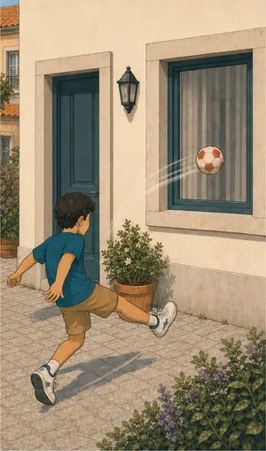
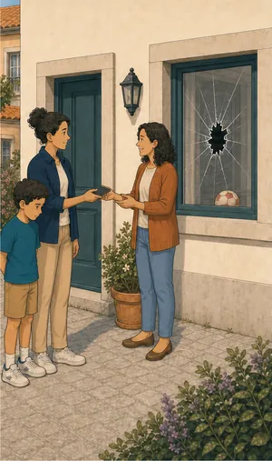
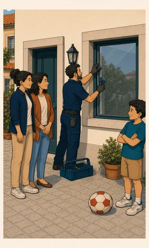

Quando o estrago
é em casa de outra pessoa.
Não é o seu carro nem a sua casa: é o prejuízo que a sua família causa a terceiros. Uma cobertura barata que quase ninguém procura — até ao dia em que precisa.
O que pode incluir
Responder pelo que
não estava previsto.
A responsabilidade civil familiar responde pelos danos que o agregado cause a outras pessoas na vida privada. Não é a responsabilidade civil da empresa, que é outro contrato, nem a do automóvel, que já vem na apólice do carro.
Muitas vezes já existe uma cobertura destas dentro do seguro de casa. Antes de contratar à parte, a primeira coisa que fazemos é ver o que já tem.



Antes de assinar
O que deve
confirmar.
São estes os pontos que mudam de solução para solução — e os que vemos consigo, um a um, antes de haver proposta.
Capital contratado
É o tecto do que a apólice paga por sinistro e por anuidade. Vale a pena perceber a exposição real antes de escolher o escalão.
Franquia
A parte que fica a seu cargo em cada sinistro. Varia com a solução.
Quem está abrangido
Cônjuge, filhos, ascendentes a cargo, animais, quem trabalha em casa — a definição de agregado muda de contrato para contrato.
O que fica de fora
Danos entre pessoas do mesmo agregado, actos dolosos, actividade profissional e uso de veículos a motor estão, em regra, excluídos.
Sobreposição com o multirriscos
O seguro de casa já costuma trazer uma responsabilidade civil. Antes de contratar à parte, vemos o que já tem.
Informação resumida e de carácter geral. As coberturas, limites, exclusões, franquias, carências e demais condições aplicáveis são as constantes da informação pré-contratual e contratual do produto efectivamente proposto.
Quem define coberturas, capitais, franquias e exclusões é a companhia. Consulte a página oficial do produto antes de decidir — e traga-nos as dúvidas.
Para quem
Situações que
vemos todas as semanas.
Família com filhos pequenos
Uma bola numa janela, um empurrão no recreio, um estrago em casa de outra pessoa. São os casos mais frequentes e os mais fáceis de subestimar.
Tem cão ou gato
Um animal que se solta e causa um acidente cria uma responsabilidade que é sua. Confirmamos se está coberta e em que termos.
Vive em prédio
Uma rotura que atinge o vizinho de baixo é o caso mais comum de todos. Muitas vezes já está no multirriscos — vemos consigo antes de duplicar.
Já tem esta cobertura
e não sabe?
Traga-nos a apólice do seguro de casa. Dizemos-lhe se a responsabilidade civil já lá está, com que capital, e se compensa reforçar.
Sem compromisso. Não usamos os seus dados para mais nada.